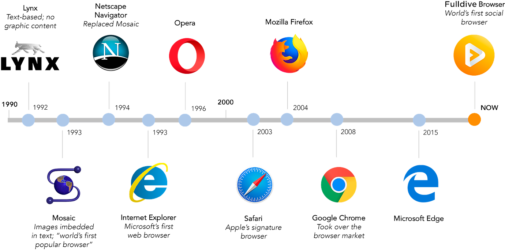

Home
About Us
Contact us
HTML BOOK PDF
History of the web browser

For the "history" feature found in most web browsers, see Web browsing history.
click here for further information
A web browser is a software application for retrieving, presenting and traversing information resources on the World Wide Web. It further provides for the capture or input of information which may be returned to the presenting system, then stored or processed as necessary. The method of accessing a particular page or content is achieved by entering its address, known as a Uniform Resource Identifier or URI. This may be a web page, image, video, or other piece of content. Hyperlinks present in resources enable users easily to navigate their browsers to related resources. A web browser can also be defined as an application software or program designed to enable users to access, retrieve and view documents and other resources on the Internet.